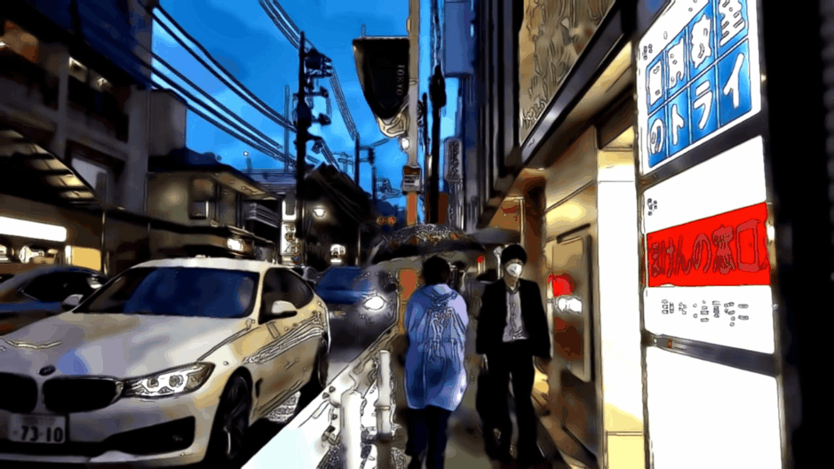

Linux+Python+Flask+OpenCV+cuDNN онлайн редактор видеофайлов/изображений/потока с Youtube и IP-камер с задействованием средств OpenCV и моделей нейронных сетей: YOLO, Mask R-CNN, Caffe, DAIN, EDSR, LapSRN, FSRCNN, ESRGAN
- Linux+Python+Flask+OpenCV+cuDNN онлайн редактор видеофайлов/изображений/потока с Youtube и IP-камер с предпросмотром кадра на веб-странице в реальном времени для распознавания объектов и их скачивания, сегментации, повышения разрешения, колоризации, стилизации, интерполяции кадров, с задействованием средств OpenCV и моделей нейронных сетей: YOLO, Mask R-CNN, Caffe, DAIN, EDSR, LapSRN, FSRCNN, ESRGAN
- Интерфейс пользователя состоит из двух страниц: главная и редактор. Главная - для выбора режима, загрузки файла или указания источника видео (Youtube, IP-камера), а также запуска редактора
- Одновременная работа пользователей на различных устройствах и вкладках браузера реализована предоставлением каждому пользователю уникального порта. При старте редактора для каждого пользователя на сервере запускается отдельный процесс
- Для работы некоторых режимов потребуется Linux и компиляция OpenCV с GPU-ускорением и библиотекой cuDNN, мануал тут: github.com/alexfcoding/OpenCV-cuDNN-manual
- Рендеры, созданные в редакторе можно посмотреть здесь: alexfcoding.github.io/PyCameraServer
- OS: Ubuntu 20.04 LTS
- GPU: NVIDIA RTX 2060
- NVIDIA driver: 440
- OpenCV 4.3
- CUDA 10.0
- cuDNN 7.6.4
- Python 3.8
- Flask 1.1.2
- PyTorch 1.4.0
- Файлы изображений: png, jpg, gif
- Видеофайлы: mp4, avi, m4v, webm, mkv
- Youtube: URL-ссылка на видео или стрим
- IP камеры: URL-ссылка на MJPEG-камеру без логина и пароля
- С применением нейронных сетей:
- (GPU/CPU) YOLO: Распознавание объектов в кадре, их подсчет в классах с возможностью скачивания объектов в zip-архив
- (GPU/CPU) YOLO: Размытие распознанных объектов и стилизация ASCII-символами
- (GPU/CPU) Mask R-CNN: Распознавание объектов и сегментация, подсчет в классах
- (GPU/CPU) Mask R-CNN: Преобразование фона за распознанными объектами в черно-белый цвет
- (GPU/CPU) Mask R-CNN: Гауссово размытие фона за распознанными объектами
- (GPU/CPU) Mask R-CNN: Замена фона анимацией из видеофайла
- (GPU) Caffe: Колоризация черно-белого видео нейронной сетью
- (CPU) EDSR / LapSRN / FSRCNN: повышение разрешения в 4 раза
- (GPU) ESRGAN / RRDB_PSNR: повышение разрешения в 4 раза с помощью обученных моделей: "FALCOON", "MANGA109", интерполяция "ESRGAN/RRDB_PSNR" с коэффициентами 0.2, 0.4, 0.6, 0.8). Модели можно выбирать на странице и добавлять новые (пока только правками в коде)
- (GPU) Depth-Aware Video Frame Interpolation: повышение плавности видео созданием новых промежуточных кадров (повышение fps x2, x4, x8)
- Средствами OpenCV без применения нейронных сетей:
- (CPU) Повышение резкости в сочетании с шумоподавлением
- (CPU) Рендер ASCII-символами
- (CPU) Стилизация под мультфильм
- (CPU) Стилизация "рисование карандашом"
- (CPU) Фильтр Собеля
- (CPU) Двухцветный режим с применением кластеризации k-means
- Содержит видео-превью для каждого режима
- Запуск редактора с выбранным режимом обработки и источником
- Предпросмотр загруженного видео, файла изображения или источника на веб-странице в реальном времени
- Обработка кадров с выбранным режимом и настройками, скачивание файла с рендером
- Создание скриншотов.
- Перемотка видеофайла или Youtube-видео с помощью слайдера
- Переключение оригинала/обработанного кадра кнопкой на странице
- Смена режима обработки и позиций слайдеров настроек без перезагрузки страницы или остановки видео (AJAX)
- Просмотр свойств источника, прогресса обработки и статистики работы сервера в реальном времени (RAM, CPU, FPS, разрешение кадра)
- Остановка обработки на сервере по таймеру в случае, если пользователь закрыл вкладку в браузере

Веб-страница редактора: распознавание объектов на видео нейронной сетью YOLO с GPU-ускорением на Linux-сервере

Веб-страница редактора: повышение разрешения загруженного изображения нейронной сетью ESRGAN с GPU-ускорением на Linux-сервере

Веб-страница редактора: стилизация под мультфильм

Стилизация под мультфильм
Главная страница / Распознавание и скачивание объектов YOLO zip-архивом / Отрисовка ASCII символами (видеофайл, Youtube, IP-камера)
Колоризация черно-белого видео на Youtube / Повышение разрешения с помощью моделей: EDSR, LapSRN, FSRCNN, ESRGAN, PSNR / Шумоподавление
Mask R-CNN: Распознавание объектов и сегментация / Редактирование фона / Замена фона анимацией / работа с оператором Кэнни
Мультфильм-стилизация / Карандаш / Фильтр Собеля / Кластеризация k-means до двух цветов
Отображение объектов YOLO и их подсчет в классах
Сегментация изображения с помощью Mask R-CNN
Повышение частоты кадров в 8 раз с Depth-Aware Video Frame Interpolation
Колоризация видео 1920 года
Описание
Протестированная конфигурация
Поддерживаемые форматы и источники
Режимы обработки
Главная страница
Страница редактора